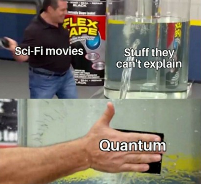
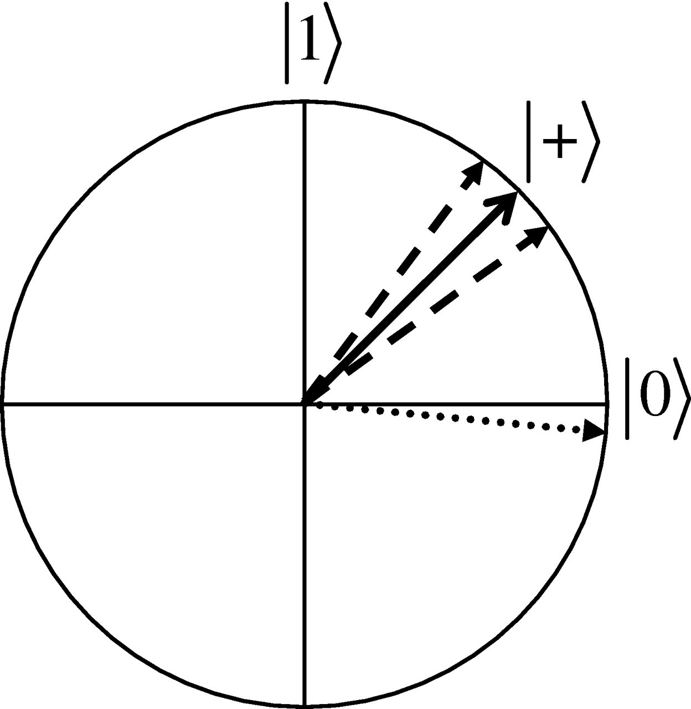

While in some movies the plot can get a bit overambitious and use the notion of quantum physics to introduce concepts such as time travel, teleportation and various magically working gadgets - which cannot be explained based on our day-to-day experiences of physics - it is also true that quantum physics, which deals with how things at an atomic level work, behaves in a different way than our intuition is used to.
Quantum computers are based on the properties of quantum physics and, although they will not help with the time-traveling part, they do possess some power over classical computers and can help us solve tasks that would not be possible with current technology.
It should be mentioned that a classical computer is a Turing machine, which means that it is capable of implementing any computer algorithm - even one that simulates a quantum computer - but this assumes that we have infinite time and memory at our disposal. Rather, quantum computers can help us solve tasks more efficiently than a classical computer, which could even mean that something that would require hundreds of years to perform can be reduced to a matter of minutes.
At a low level, in an ordinary computer, everything is made of bits. A bit is the basic unit of information which represents two possible states - in a physical representation, some circuits recognize a voltage lower than \(0.8V\) as a state, whereas the other state can be identified by a voltage higher than \(2.2V\) - in a logical representation, however, the two states are simplified to \(0\) and \(1\). Fortunately for us, the bits are hidden by high-level routines which make life way easier, as it would be burdensome to manipulate them into performing a desired task.
In contrast, for a quantum computer, the fundamental unit of information is the qubit. However, a qubit is not limited to only two states, and instead, it can be represented as a two-dimensional vector, taking into account the constraint from below:
\[\newcommand\col[1]{\begin{bmatrix}#1\end{bmatrix}} \col{a \\ b}, \quad |a|^2+|b|^2 = 1; \ a,b\in \mathbb{C}\]This is similar to probabilities, where for any event, the probabilities for all its outcomes must sum to \(1\), but for a qubit, those should be squared and also taken in modulus (if \(a\) and \(b\) are complex numbers).
Without loss of generality, we will assume that we work only with real numbers for now. Therefore, the state space for a single qubit can be visualized as any point on the surface of a unit circle, as seen below.
For ease of notation, we introduced above a new notation: \(\ket{\cdot}\), called "ket", which simply represents a vector. Also, two special cases corresponding to the classical bits \(0\) and \(1\) can be distinguished as:
\[\require{braket} \ket{0} = \col{1 \\ 0}; \quad \ket{1} = \col{0 \\ 1} \]Using this, the two basis states for a qubit can be represented as \(\ket{0}\) and \(\ket{1}\), and any general state of a qubit can be expressed as a linear combination of these two basis states:
\[ \col{a \\ b} = a \col{1 \\ 0} + b\col{0 \\ 1} = a \ket{0} + b \ket{1} \]Another example of a qubit (seen in the above picture) is \(\ket{+}\), which is quite special since for this state \(a\) and \(b\) are equal (this happens when \(a=b=\frac{1}{\sqrt 2}\)).
\[ \ket{+} = \frac{1}{\sqrt 2} \ket{0} + \frac{1}{\sqrt 2} \ket{1} = \col{\frac{1}{\sqrt 2} \\ \frac{1}{\sqrt 2}} \]
TBA
TBA